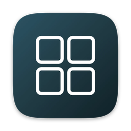

Group apps into folders like you do on iPhone, and pin each folder to the Dock as a single icon. Click it, and a grid of its apps opens right there.
brew install --cask uraxdev/tap/dokr
Requires macOS 13 Ventura or later. Universal build for Apple silicon and Intel.
Click a folder to open it, then launch an app. Like any running app, it gets its own Dock icon while it's open.
Set up a folder once. After that, it's just an icon in your Dock.
Name it, then add apps from a searchable list of everything installed, the Finder picker, or by dragging them in from Finder. Drag to reorder.
The folder shows up in the Dock as one icon: a 3×3 grid of its first nine apps, like a folder on iPhone.
A grid of the folder's apps opens next to the icon. Click an app to launch it. Press Esc, click outside, or click the icon again to close it.
Dokr reads your Dock settings and follows them, so folders look and behave like they shipped with macOS.
The Dock icon is a live 3×3 grid of the folder's first nine apps.
Bottom, left or right edge, auto-hide, icon size and magnification. The popup opens from wherever your Dock is.
A rounded, blurred bubble with a tail pointing at the icon. Apps that are open have a dot under them, updated live, like in the Dock.
Dokr only uses what macOS already provides, so it's safe to try and easy to remove.
Nothing is injected into the Dock and SIP stays on, so there's no hack for a macOS update to break.
Dokr generates a small app for every folder and adds it to the Dock through the Dock's own preferences.
Your last 10 Dock layouts are saved, and you can restore any of them from Dokr.
Uninstalling with --zap removes your folders, backups and the login agent.
brew uninstall --zap --cask dokr
Including what Dokr can't do.
Yes. macOS has no public API to hide another app's running icon, so an app you launch from a folder appears in the Dock while it's open, like any other app.
Every change backs up your Dock layout first, and you can restore any backup. Dokr doesn't modify macOS itself.
Folder helpers start at login, so macOS shows this notice once. You don't need to do anything.
Yes. If “Show in Dock” is on for that folder, Dokr adds it back the next time you apply.
App Store apps must be sandboxed, and a sandboxed app can't write the Dock's preferences. Dokr is available as a direct download and through Homebrew instead.
Any Mac with macOS 13 Ventura or later, on Apple silicon or Intel.

Download Dokr and sort your Dock into a few folders.
brew install --cask uraxdev/tap/dokr